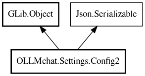

Config2
Object Hierarchy:

Description:
public class Config2 : Object, Serializable
Main serializable configuration holder for version 2 format (multiple clients, extended structure).
This is the top-level container class that holds all configuration data. Supports GType registration for external configuration sections.
Example
// Load configuration
Config2.config_path = "~/.config/ollmchat/config.2.json";
var config = Config2.load();
// Access connections
foreach (var conn in config.connections.values) {
print(@"Connection: $(conn.name) - $(conn.url)");
}
// Get model options
var options = config.model_options.get("llama3.2");
if (options != null) {
options.temperature = 0.7;
}
// Save configuration
config.save();
Since:
1.0
Content:
Properties:
- public Map<string,Connection> connections { get; set; }
Map of connection URL → Connection objects
- public Map<string,Options> model_options { get; set; }
Map of model name → Call.Options (per-model option overrides)
- public Map<string,BaseToolConfig> tools { get; set; }
Map of tool name → tool configuration objects (handled by registered
GTypes)
- public Map<string,Node> tools_unregistered { get; set; }
Map of tool name → Json.Node for unregistered types.
- public Map<string,Object> usage { get; set; }
Map of usage key → model usage objects (handled by registered
GTypes)
- public Map<string,Node> usage_unregistered { get; set; }
Map of usage key → Json.Node for unregistered types.
Static methods:
Creation methods:
- public Config2 ()
Default constructor.
Methods:
- public async void check_connections ()
Checks version on all connections and updates is_working flag.
- public Config2 clone ()
Creates a deep copy of this Config2 instance by serializing and
deserializing.
- public Connection? default_connection ()
Gets the default connection from the connections map.
- public override bool deserialize_property (string property_name, out Value value, ParamSpec pspec, Node property_node)
- public unowned ParamSpec? find_property (string name)
- public string get_default_model ()
Gets the default model name from the usage map.
- public Value get_property (ParamSpec pspec)
- public void save ()
Saves configuration to file.
- public override Node serialize_property (string property_name, Value value, ParamSpec pspec)
- public void set_property (ParamSpec pspec, Value value)
- public Connection? working_connection ()
Returns the first working connection based on is_working flag.
Signals:
Fields:
- public static string config_path
Configuration file path (static, set once at application startup)
- public bool loaded
Whether the config was successfully loaded from a file. This property
is not serialized.
Inherited Members:
All known members inherited from class GLib.Object
- @get
- @new
- @ref
- @set
- add_toggle_ref
- add_weak_pointer
- bind_property
- connect
- constructed
- disconnect
- dispose
- dup_data
- dup_qdata
- force_floating
- freeze_notify
- get_class
- get_data
- get_property
- get_qdata
- get_type
- getv
- interface_find_property
- interface_install_property
- interface_list_properties
- is_floating
- new_valist
- new_with_properties
- newv
- notify
- notify_property
- ref_count
- ref_sink
- remove_toggle_ref
- remove_weak_pointer
- replace_data
- replace_qdata
- set_data
- set_data_full
- set_property
- set_qdata
- set_qdata_full
- set_valist
- setv
- steal_data
- steal_qdata
- thaw_notify
- unref
- watch_closure
- weak_ref
- weak_unref
All known members inherited from interface Json.Serializable
- default_deserialize_property
- default_serialize_property
- deserialize_property
- find_property
- get_property
- list_properties
- serialize_property
- set_property